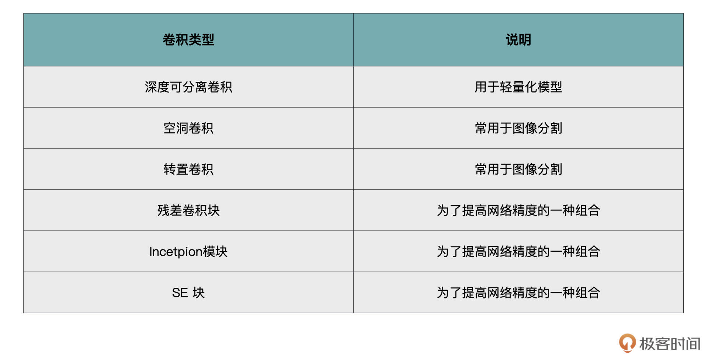
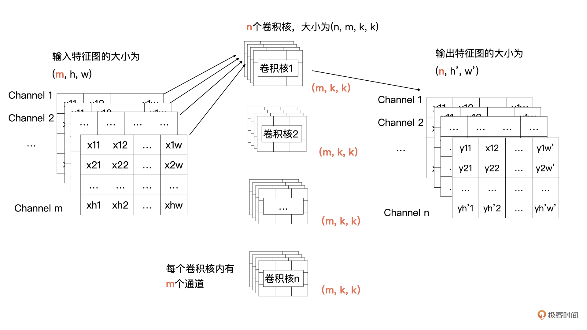
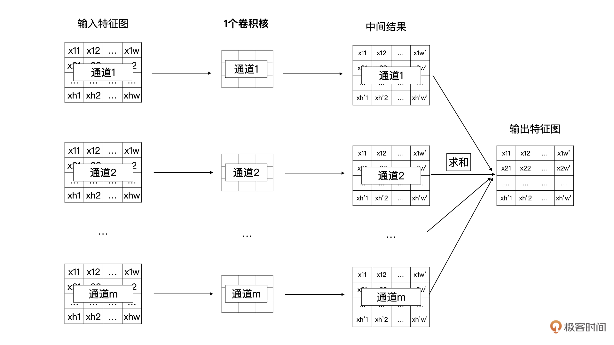
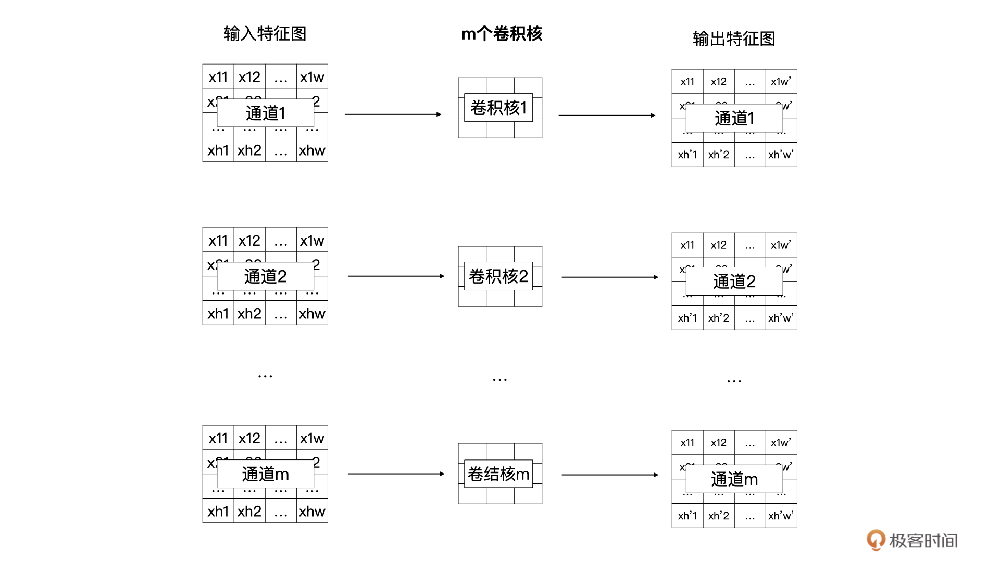
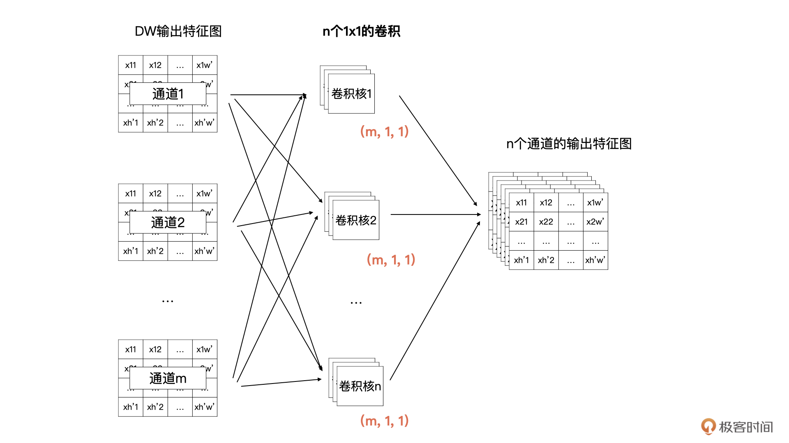
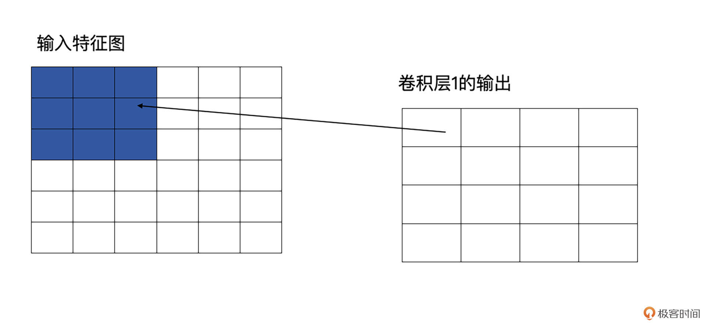
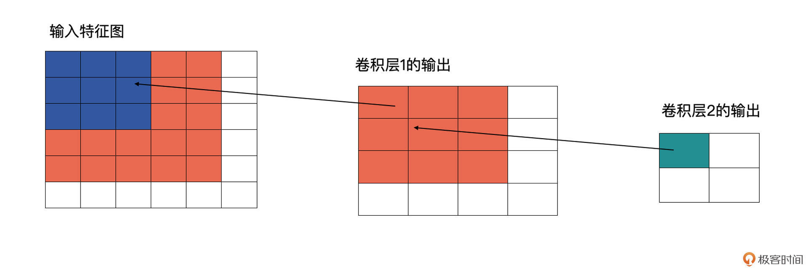
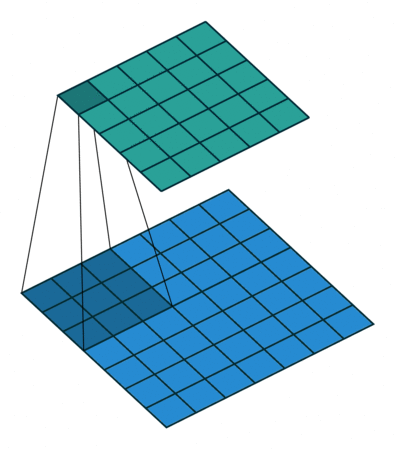
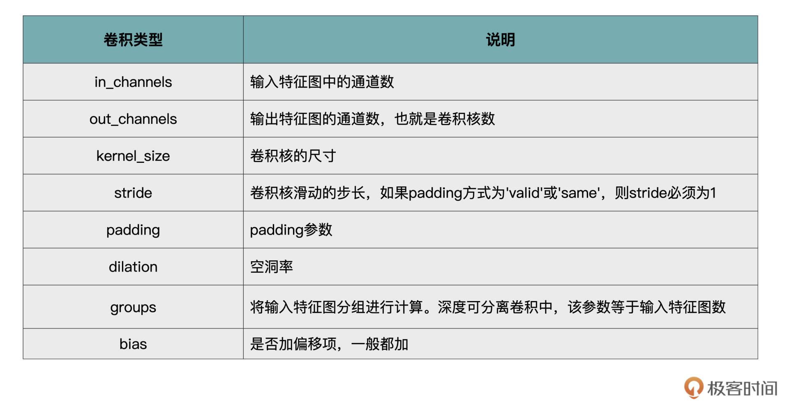

- 00 开篇词 如何高效入门PyTorch？.md.html
- 01 PyTorch：网红中的顶流明星.md.html
- 02 NumPy（上）：核心数据结构详解.md.html
- 03 NumPy（下）：深度学习中的常用操作.md.html
- 04 Tensor：PyTorch中最基础的计算单元.md.html
- 05 Tensor变形记：快速掌握Tensor切分、变形等方法.md.html
- 06 Torchvision（上）：数据读取，训练开始的第一步.md.html
- 07 Torchvision（中）：数据增强，让数据更加多样性.md.html
- 08 Torchvision（下）：其他有趣的功能.md.html
- 09 卷积（上）：如何用卷积为计算机“开天眼”？.md.html
- 10 卷积（下）：如何用卷积为计算机“开天眼”？.md.html
- 11 损失函数：如何帮助模型学会“自省”？.md.html
- 12 计算梯度：网络的前向与反向传播.md.html
- 13 优化方法：更新模型参数的方法.md.html
- 14 构建网络：一站式实现模型搭建与训练.md.html
- 15 可视化工具：如何实现训练的可视化监控？.md.html
- 16 分布式训练：如何加速你的模型训练？.md.html
- 17 图像分类（上）：图像分类原理与图像分类模型.md.html
- 18 图像分类（下）：如何构建一个图像分类模型_.md.html
- 19 图像分割（上）：详解图像分割原理与图像分割模型.md.html
- 20 图像分割（下）：如何构建一个图像分割模型？.md.html
- 21 NLP基础（上）：详解自然语言处理原理与常用算法.md.html
- 22 NLP基础（下）：详解语言模型与注意力机制.md.html
- 23 情感分析：如何使用LSTM进行情感分析？.md.html
- 24 文本分类：如何使用BERT构建文本分类模型？.md.html
- 25 摘要：如何快速实现自动文摘生成？.md.html
- 加餐 机器学习其实就那么几件事.md.html
- 用户故事 Tango：师傅领进门，修行在个人.md.html
- 答疑篇 思考题答案集锦.md.html
- 结束语 人生充满选择，选择与努力同样重要.md.html
- 捐赠
10 卷积（下）：如何用卷积为计算机“开天眼”？
你好，我是方远。
经过上一节课的学习，相信你已经对标准的卷积计算有所了解。虽然标准卷积基本上可以作为主力Carry全场，但是人们还是基于标准卷积，提出了一些其它的卷积方式，这些卷积方式在应对不同问题时能够发挥不同的作用，这里我为你列举了一些。

在上一节课中，我们学习了conv2d的in_channels、out_channels、kernel_size、stride、padding与bias参数。
其中，PyTorch中conv2d中剩余的两个参数，它们分别对应着两种不同的卷积，分别是深度可分离卷积和空洞卷积，让我们一起来看看。
深度可分离卷积（Depthwise Separable Convolution）
我们首先看看依托groups参数实现的深度可分离卷积。
随着深度学习技术的不断发展，许多很深、很宽的网络模型被提出，例如，VGG、ResNet、SENet、DenseNet等，这些网络利用其复杂的结构，可以更加精确地提取出有用的信息。同时也伴随着硬件算力的不断增强，可以将这些复杂的模型直接部署在服务器端，在工业中可以落地的项目中都取得了非常优秀的效果。
但这些模型具有一个通病，就是速度较慢、参数量大，这两个问题使得这些模型无法被直接部署到移动终端上。而移动端的各种应用无疑是当今最火热的一个市场，这种情况下这些深而宽的复杂网络模型就不适用了。
因此，很多研究将目光投入到寻求更加轻量化的模型当中，这些轻量化模型的要求是速度快、体积小，精度上允许比服务器端的模型稍微降低一些。
深度可分离卷积就是谷歌在MobileNet v1中提出的一种轻量化卷积。简单来说，深度可分离卷积就是我们刚才所说的在效果近似相同的情况下，需要的计算量更少。接下来，我们先来看看深度可分离卷积是如何计算的，然后再对比一下计算量到底减少了多少。
深度可分离卷积（Depthwise Separable Convolution）由 Depthwise（DW）和 Pointwise（PW）这两部分卷积组合而成的。
我们先来复习一下标准卷积，然后再来讲解一下获得同样输出特征图的深度可分离卷积是如何工作的。
你还记得下面这张图吗？这是我们上节课讲到的标准卷积计算方式，它描述的是：输入m个尺寸为h, w的特征图，通过卷积计算获得n个通道尺寸为\(h^{\\prime}\)与\(w^{\\prime}\)的特征图的计算过程。

我们将特征图与一个卷积核计算的过程展开一下，请看下图。一个卷积核中的m个卷积分别与输入特征图的m个通道数据进行卷积计算，生成一个中间结果，然后m个中间结果按位求和，最终就能获得n个输出特征图中的一个特征图。- 
Depthwise（DW）卷积
那什么是DW卷积呢？DW卷积就是有m个卷积核的卷积，每个卷积核中的通道数为1，这m个卷积核分别与输入特征图对应的通道数据做卷积运算，所以DW卷积的输出是有m个通道的特征图。通常来说，DW卷积核的大小是3x3的。
DW卷积的过程如下图所示：

Pointwise（PW）卷积
通常来说，深度可分离卷积的目标是轻量化标准卷积计算的，所以它是可以来替换标准卷积的，这也意味着原卷积计算的输出尺寸是什么样，替换后的输出尺寸也要保持一致。
所以，在深度可分离卷积中，我们最终要获得一个具有n个通道的输出特征图，而刚才介绍的DW卷积显然没有达到，并且DW卷积也忽略了输入特征图通道之间的信息。
所以，在DW之后我们还要加一个PW卷积。PW 卷积也叫做逐点卷积。PW卷积的主要作用就是将DW输出的m个特征图结合在一起考虑，再输出一个具有n个通道的特征图。
在卷积神经网络中，我们经常可以看到使用1x1的卷积，1x1的卷积主要作用就是升维与降维。所以，在DW的输出之后的PW卷积，就是n个卷积核的1x1的卷积，每个卷积核中有m个通道的卷积数据。
为了帮你理解刚才我描述的这个过程，我还是用图解的方式为你描述一下，你可以对照下图看一看：

经过这样的DW与PW的组合，我们就可以获得一个与标准卷积有同样输出尺寸的轻量化卷积啦。既然是轻量化，那么我们下面就来看看，深度可分离卷积的计算量相对于标准卷积减少了多少呢？
计算量
我们的原问题是有m个通道的输入特征图，卷积核尺寸为kxk，输出特征图的尺寸为\((n, h^{\\prime}, w^{\\prime})\)，那么标准的卷积的计算量为：
\[k \\times k \\times m \\times n \\times h^{\\prime} \\times w^{\\prime}\]
我们是怎么得出这个结果的呢？你可以从输出特征图往回思考。

上图输出特征图中每个点的数值是由n个卷积核与输入特征图计算出来的吧，这个计算量是\(k \\times k \\times m \\times n\)，那输出特征图有多少个点？没错，一共有\(h^{\\prime} \\times w^{\\prime}\)个。所以，我们自然就得出上面的计算方式了。
如果采用深度可分离卷积，DW的计算量为：\(k \\times k \\times m \\times h^{\\prime} \\times w^{\\prime}\)，而PW的计算量为：\(1 \\times 1 \\times m \\times n \\times h^{\\prime} \\times w^{\\prime}\)。
我们不难得出标准卷积与深度可分离卷积计算量的比值为：
\[\\frac {k \\times k \\times m \\times h^{\\prime} \\times w^{\\prime} + 1 \\times 1 \\times m \\times n \\times h^{\\prime} \\times w^{'}}{k \\times k \\times m \\times n \\times h^{\\prime} \\times w^{\\prime}}\]
\[= \\frac {1}{n} + \\frac {1}{k \\times k}\]
所以，深度可分离卷积的计算量大约为普通卷积计算量的\(\\frac {1}{k^2}\)。
那深度可分离卷积落实到PyTorch中是怎么实现的呢？
PyTorch中的实现
在PyTorch中实现深度可分离卷积的话，我们需要分别实现DW与PW两个卷积。我们先看看DW卷积，实现DW卷积的话，就会用到nn.Conv2d中的groups参数。groups参数的作用就是控制输入特征图与输出特征图的分组情况。
当groups等于1的时候，就是我们上一节课讲的标准卷积，而groups=1也是nn.Conv2d的默认值。
当groups不等于1的时候，会将输入特征图分成groups个组，每个组都有自己对应的卷积核，然后分组卷积，获得的输出特征图也是有groups个分组的。需要注意的是，groups不为1的时候，groups必须能整除in_channels和out_channels。
当groups等于in_channels时，就是我们的DW卷积啦。
好，下面我们一起动手操作一下，看看如何实现一个DW卷积。首先我们来生成一个三通道的5x5输入特征图，然后经过深度可分离卷积，输出一个4通道的特征图。
DW卷积的实现代码如下：
import torch
import torch.nn as nn
# 生成一个三通道的5x5特征图
x = torch.rand((3, 5, 5)).unsqueeze(0)
print(x.shape)
# 输出：
torch.Size([1, 3, 5, 5])
# 请注意DW中，输入特征通道数与输出通道数是一样的
in_channels_dw = x.shape[1]
out_channels_dw = x.shape[1]
# 一般来讲DW卷积的kernel size为3
kernel_size = 3
stride = 1
# DW卷积groups参数与输入通道数一样
dw = nn.Conv2d(in_channels_dw, out_channels_dw, kernel_size, stride, groups=in_channels_dw)
你需要注意以下几点内容：
1.DW中，输入特征通道数与输出通道数是一样的；- 2.一般来讲，DW的卷积核为3x3；- 3.DW卷积的groups参数与输出通道数是一样的。
好啦，DW如何实现我们已经写好了，接下来就是PW卷积的实现。其实PW卷积的实现就是我们上一节课介绍的标准卷积，只不过卷积核为1x1。需要注意的是，PW卷积的groups就是默认值了。
具体代码如下所示：
in_channels_pw = out_channels_dw
out_channels_pw = 4
kernel_size_pw = 1
pw = nn.Conv2d(in_channels_pw, out_channels_pw, kernel_size_pw, stride)
out = pw(dw(x))
print(out.shape)
好了，groups以及深度可分离卷积就讲完了，接下来我们看看最后一个dilation参数，它是用来实现空洞卷积的。
空洞卷积
空洞卷积经常用于图像分割任务当中。图像分割任务的目的是要做到pixel-wise的输出，也就是说，对于图片中的每一个像素点，模型都要进行预测。
对于一个图像分割模型，通常会采用多层卷积来提取特征的，随着层数的不断加深，感受野也越来越大。这里有个新名词——“感受野”，这个我稍后再解释。我们先把空洞卷积的作用说完。
但是对于图像分割模型有个问题，经过多层的卷积与pooling操作之后，特征图会变小。为了做到每个像素点都有预测输出，我们需要对较小的特征图进行上采样或反卷积，将特征图扩大到一定尺度，然后再进行预测。
要知道，从一个较小的特征图恢复到一个较大的特征图，这显然会带来一定的信息损失，特别是较小的物体，这种损失是很难恢复的。那问题来了，能不能既保证有比较大的感受野，同时又不用缩小特征图呢？
估计你已经猜到了，空洞卷积就是解决这个问题的杀手锏，它最大的优点就是不需要缩小特征图，也可以获得更大的感受野。
感受野
现在让我来解释一下什么是感受野。感受野是计算机视觉领域中经常会看到的一个概念。
因为伴随着不断的pooling（这是卷积神经网络中的一种操作，通常是在一定区域的特征图内取最大值或平均值，用最大值或平均值代替这个区域的所有数据，pooling操作会使特征图变小）或者卷积操作，在卷积神经网络中不同层的特征图是越来越小的。
这就意味着在卷积神经网络中，相对于原图来说，不同层的特征图，其计算区域是不一样的，这个区域就是感受野。感受野越大，代表着包含的信息更加全面、语义信息更加抽象，而感受野越小，则代表着包含更加细节的语义信息。
光说理论不容易理解，我们还是结合例子看一看。请看下图，原图是6x6的图像，第一层卷积层为3x3，这时它输出的感受野就是3，因为输出的特征图中每个值都是由原图中3x3个区域计算而来的。

再看下图，卷积层2也为3x3的卷积，输出为2x2的特征图。这时卷积层2的感受野就会变为5（输入特征图中蓝色加橘黄色部分）。

配合图解，我相信你很容易就能明白感受野的含义了。
计算方式
好，那么我们再来看看空洞卷积具体是如何计算的。
用语言来描述空洞卷积的计算方式比较抽象，我们不妨看一下它的动态示意图（这个GitHub中有各种卷积计算的动态图，非常直观，我们借助它来学习一下空洞卷积）。
首先，我们先来看看上节课讲的标准卷积是如何计算的。

对照上图，下面的蓝图为输入特征图，滑动的阴影为卷积核，绿色的为输出特征图。
然后我们再对照一下的空洞卷积示意图。

结合示意图我们会发现，计算方式与普通卷积一样，只不过是将卷积核以一定比例拆分开来。实现起来呢，就是用0来充填卷积核。
这个分开的比例，我们一般称之为扩张率，就是Conv2d中的dilation参数。
dilation参数默认为1，同样也是可以为int或者tuple。当为tuple时，第一位代表行的信息，第二位代表列的信息。
总结
恭喜你，完成了今天的学习。今天我们在实现PyTorch卷积操作的同时，学习了两个特殊的卷积，深度可分离卷积与空洞卷积。
对于空洞卷积，你最需要掌握的是感受野这个概念，以及空洞卷积的计算方式。感受野就是能在原始图像中反应的区域。
深度可分离卷积主要用于轻量化的模型，而空洞卷积主要用于图像分割任务中。
这里分享一下我的经验：如果说你需要轻量化你的模型，让你的模型变得更小、更快，你可以考虑将卷积层替换为深度可分离卷积。如果你在做图像分割项目的话，可以考虑将网络靠后的层替换为空洞卷积，看看效果是否能有所提高。
最后，我们再来总结一下PyTorch中卷积操作的各个重要参数，我用表格的方式帮你做了总结归纳，你可以把它作为自己的工具包，时常翻看。

每课一练
随机生成一个3通道的128x128的特征图，然后创建一个有10个卷积核且卷积核尺寸为3x3（DW卷积）的深度可分离卷积，对输入数据进行卷积计算。
欢迎你在留言区跟我交流互动，也推荐你把今天的内容分享给更多同事、朋友。
© 2019 - 2023 Liangliang Lee. Powered by gin and hexo-theme-book.